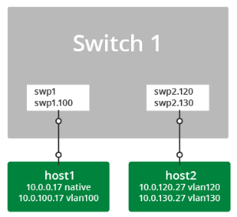
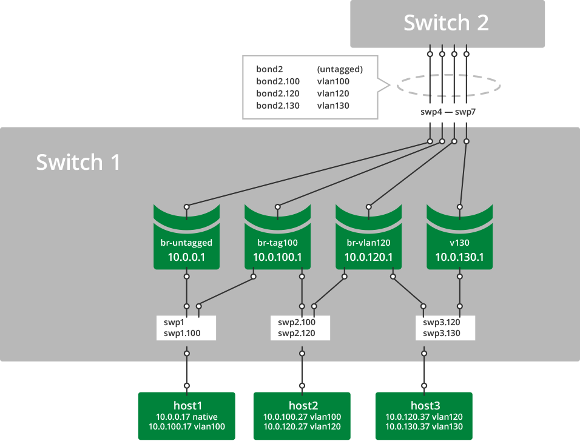
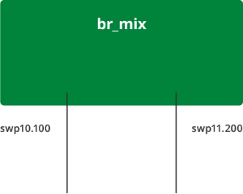

VLAN Tagging
This article shows two examples of VLAN tagging, one basic and one more advanced. They both demonstrate the streamlined interface configuration from ifupdown2.
Contents
VLAN Tagging, a Basic Example
A simple configuration demonstrating VLAN tagging involves two hosts connected to a switch.

-
host1 connects to swp1 with both untagged frames and with 802.1Q frames tagged for vlan100.
-
host2 connects to swp2 with 802.1Q frames tagged for vlan120 and vlan130.
Persistent Configuration
To configure the above example persistently, edit /etc/network/interfaces like this:
# Config for host1auto swp1iface swp1auto swp1.100iface swp1.100# Config for host2# swp2 must exist to create the .1Q subinterfaces, but it is not assigned an addressauto swp2iface swp2auto swp2.120iface swp2.120auto swp2.130iface swp2.130VLAN Tagging, an Advanced Example
This example of VLAN tagging is more complex, involving three hosts and two switches, with a number of bridges and a bond connecting them all.

-
host1 connects to bridge br-untagged with bare Ethernet frames and to bridge br-tag100 with 802.1q frames tagged for vlan100.
-
host2 connects to bridge br-tag100 with 802.1q frames tagged for vlan100 and to bridge br-vlan120 with 802.1q frames tagged for vlan120.
-
host3 connects to bridge br-vlan120 with 802.1q frames tagged for vlan120 and to bridge v130 with 802.1q frames tagged for vlan130.
-
bond2 carries tagged and untagged frames in this example.
Although not explicitly designated, the bridge member ports function as 802.1Q access ports and trunk ports. In the example above, comparing Cumulus Linux with a traditional Cisco device:
-
swp1 is equivalent to a trunk port with untagged and vlan100.
-
swp2 is equivalent to a trunk port with vlan100 and vlan120.
-
swp3 is equivalent to a trunk port with vlan120 and vlan130.
-
bond2 is equivalent to an EtherChannel in trunk mode with untagged, vlan100, vlan120, and vlan130.
-
Bridges br-untagged, br-tag100, br-vlan120, and v130 are equivalent to SVIs (switched virtual interfaces).
Persistent Configuration
From /etc/network/interfaces:
# Config for host1 - - - - - - - - - - - - - - - - - - - - - - - - - - - - - - - - -# swp1 does not need an iface section unless it has a specific setting,# it will be picked up as a dependent of swp1.100.# And swp1 must exist in the system to create the .1q subinterfaces..# but it is not applied to any bridge..or assigned an address. auto swp1.100 iface swp1.100# Config for host2# swp2 does not need an iface section unless it has a specific setting,# it will be picked up as a dependent of swp2.100 and swp2.120.# And swp2 must exist in the system to create the .1q subinterfaces..# but it is not applied to any bridge..or assigned an address.auto swp2.100iface swp2.100auto swp2.120iface swp2.120# Config for host3# swp3 does not need an iface section unless it has a specific setting,# it will be picked up as a dependent of swp3.120 and swp3.130.# And swp3 must exist in the system to create the .1q subinterfaces..# but it is not applied to any bridge..or assigned an address.auto swp3.120iface swp3.120auto swp3.130iface swp3.130# Configure the bond - - - - - - - - - - - - - - - - - - - - - - - - - - - - - - - - -auto bond2iface bond2 bond-slaves glob swp4-7# configure the bridges - - - - - - - - - - - - - - - - - - - - - - - - - - - - - - - - -auto br-untaggediface br-untagged address 10.0.0.1/24 bridge-ports swp1 bond2 bridge-stp onauto br-tag100iface br-tag100 address 10.0.100.1/24 bridge-ports swp1.100 swp2.100 bond2.100 bridge-stp onauto br-vlan120iface br-vlan120 address 10.0.120.1/24 bridge-ports swp2.120 swp3.120 bond2.120 bridge-stp onauto v130iface v130 address 10.0.130.1/24 bridge-ports swp3.130 bond2.130 bridge-stp on# - - - - - - - - - - - - - - - - - - - - - - - - - - - - - - - - -
To verify:
cumulus@switch:~$ sudo mstpctl showbridge br-tag100br-tag100 CIST info enabled yes bridge id 8.000.44:38:39:00:32:8B designated root 8.000.44:38:39:00:32:8B regional root 8.000.44:38:39:00:32:8B root port none path cost 0 internal path cost 0 max age 20 bridge max age 20 forward delay 15 bridge forward delay 15 tx hold count 6 max hops 20 hello time 2 ageing time 300 force protocol version rstp time since topology change 333040s topology change count 1 topology change no topology change port swp2.100 last topology change port Nonecumulus@switch:~$ sudo mstpctl showportdetail br-tag100 | grep -B 2 statebr-tag100:bond2.100 CIST info enabled yes role Designated port id 8.003 state forwarding--br-tag100:swp1.100 CIST info enabled yes role Designated port id 8.001 state forwarding--br-tag100:swp2.100 CIST info enabled yes role Designated port id 8.002 state forwardingcumulus@switch:~$ cat /proc/net/vlan/configVLAN Dev name | VLAN IDName-Type: VLAN_NAME_TYPE_RAW_PLUS_VID_NO_PADbond2.100 | 100 | bond2bond2.120 | 120 | bond2bond2.130 | 130 | bond2swp1.100 | 100 | swp1swp2.100 | 100 | swp2swp2.120 | 120 | swp2swp3.120 | 120 | swp3swp3.130 | 130 | swp3cumulus@switch:~$ cat /proc/net/bonding/bond2Ethernet Channel Bonding Driver: v3.7.1 (April 27, 2011)Bonding Mode: IEEE 802.3ad Dynamic link aggregationTransmit Hash Policy: layer3+4 (1)MII Status: upMII Polling Interval (ms): 100Up Delay (ms): 0Down Delay (ms): 0802.3ad infoLACP rate: fastMin links: 0Aggregator selection policy (ad_select): stableActive Aggregator Info: Aggregator ID: 3 Number of ports: 4 Actor Key: 33 Partner Key: 33 Partner Mac Address: 44:38:39:00:32:cfSlave Interface: swp4MII Status: upSpeed: 10000 MbpsDuplex: fullLink Failure Count: 0Permanent HW addr: 44:38:39:00:32:8eAggregator ID: 3Slave queue ID: 0Slave Interface: swp5MII Status: upSpeed: 10000 MbpsDuplex: fullLink Failure Count: 0Permanent HW addr: 44:38:39:00:32:8fAggregator ID: 3Slave queue ID: 0Slave Interface: swp6MII Status: upSpeed: 10000 MbpsDuplex: fullLink Failure Count: 0Permanent HW addr: 44:38:39:00:32:90Aggregator ID: 3Slave queue ID: 0Slave Interface: swp7MII Status: upSpeed: 10000 MbpsDuplex: fullLink Failure Count: 0Permanent HW addr: 44:38:39:00:32:91Aggregator ID: 3Slave queue ID: 0A single bridge cannot contain multiple subinterfaces of the same port as members. Attempting to apply such a configuration will result in an error:
cumulus@switch:~$ sudo brctl addbr another_bridgecumulus@switch:~$ sudo brctl addif another_bridge swp9 swp9.100bridge cannot contain multiple subinterfaces of the same port: swp9, swp9.100VLAN Translation
By default, Cumulus Linux does not allow VLAN subinterfaces associated with different VLAN IDs to be part of the same bridge. Base interfaces are not explicitly associated with any VLAN IDs and are exempt from this restriction:
cumulus@switch:~$ sudo brctl addbr br_mixcumulus@switch:~$ sudo ip link add link swp10 name swp10.100 type vlan id 100cumulus@switch:~$ sudo ip link add link swp11 name swp11.200 type vlan id 200cumulus@switch:~$ sudo brctl addif br_mix swp10.100 swp11.200can't add swp11.200 to bridge br_mix: Invalid argumentIn some cases, it may be useful to relax this restriction. For example, two servers may be connected to the switch using VLAN trunks, but the VLAN numbering provisioned on the two servers are not consistent. You can choose to just bridge two VLAN subinterfaces of different VLAN IDs from the servers. You do this by enabling the sysctl net.bridge.bridge-allow-multiple-vlans. Packets entering a bridge from a member VLAN subinterface will egress another member VLAN subinterface with the VLAN ID translated.
A bridge in VLAN-aware mode cannot have VLAN translation enabled for it; only bridges configured in traditional mode can utilize VLAN translation.
The following example enables the VLAN translation sysctl:
cumulus@switch:~$ echo net.bridge.bridge-allow-multiple-vlans = 1 | sudo tee /etc/sysctl.d/multiple_vlans.conf net.bridge.bridge-allow-multiple-vlans = 1 cumulus@switch:~$ sudo sysctl -p /etc/sysctl.d/multiple_vlans.confnet.bridge.bridge-allow-multiple-vlans = 1If the sysctl is enabled and you want to disable it, run the above example, setting the sysctl net.bridge.bridge-allow-multiple-vlans to 0.
Once the sysctl is enabled, ports with different VLAN IDs can be added to the same bridge. In the following example, packets entering the bridge br-mix from swp10.100 will be bridged to swp11.200 with the VLAN ID translated from 100 to 200:
cumulus@switch:~$ sudo brctl addif br_mix swp10.100 swp11.200cumulus@switch:~$ sudo brctl show br_mixbridge name bridge id STP enabled interfacesbr_mix 8000.4438390032bd yes swp10.100 swp11.200